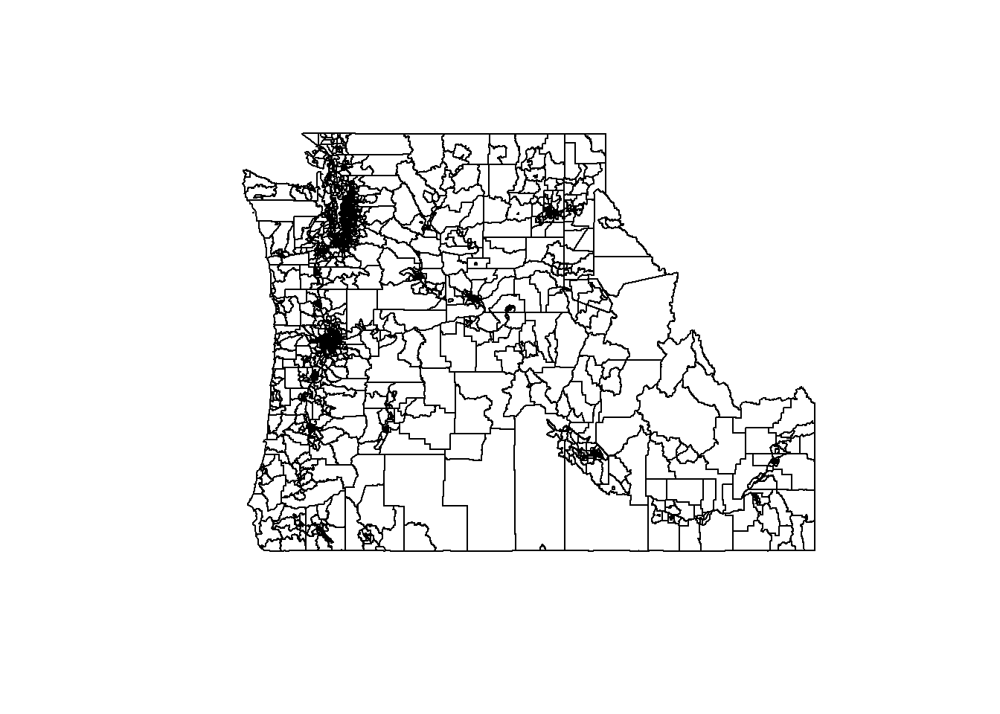
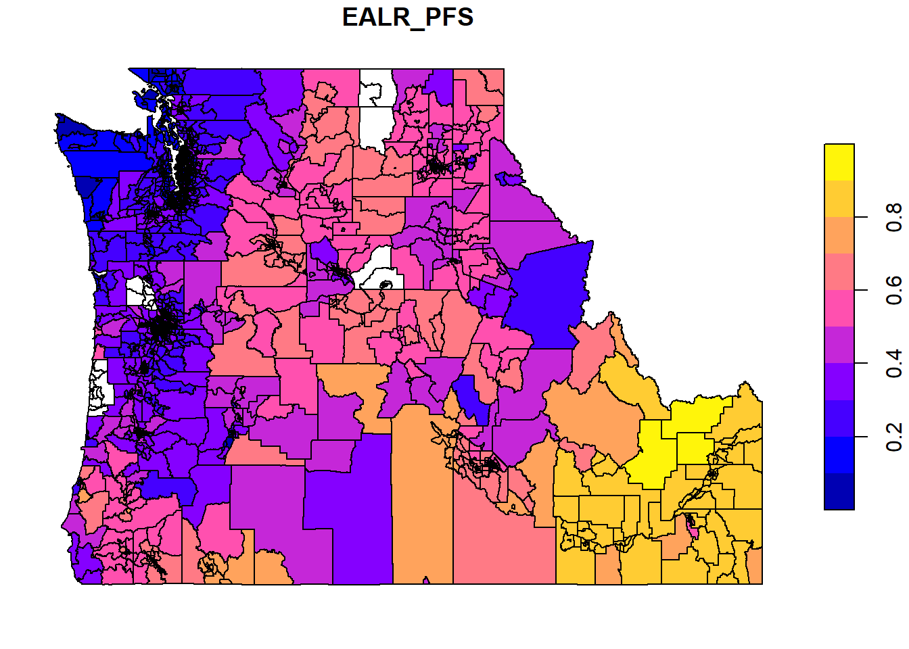
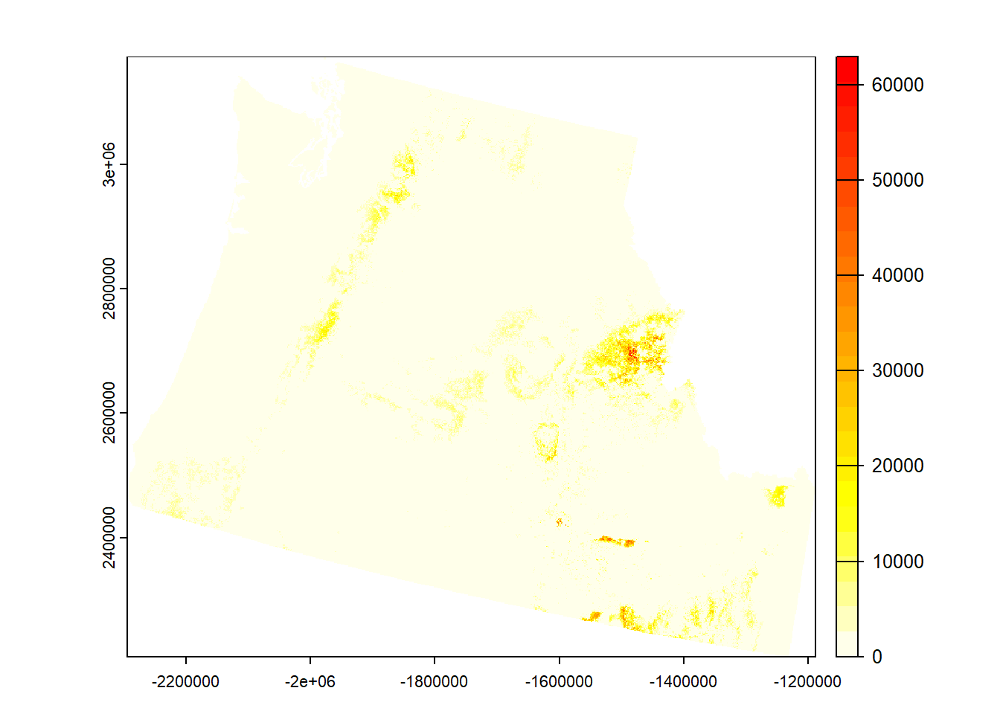
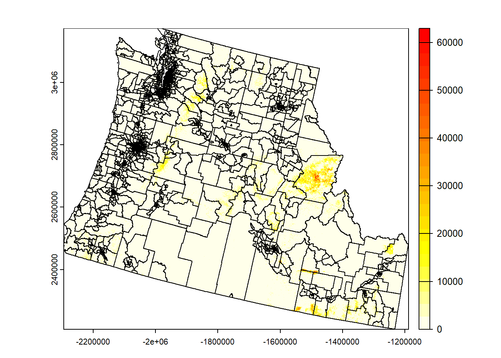
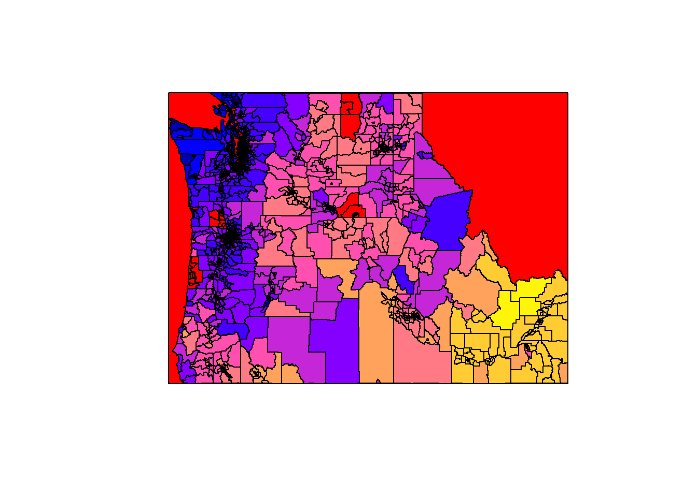

Code
library(sf)
cejst <- st_read("/opt/data/data/assignment04/cejst_nw.shp")plot methods:Load library and vector data:
library(sf)
cejst <- st_read("/opt/data/data/assignment04/cejst_nw.shp")Plot vector data:
plot(st_geometry(cejst))
plot(cejst$geometry)
plot(cejst["EALR_PFS"])
See column name meanings:
View(read.csv("/opt/data/data/assignment04/columns.csv"))Read in library and raster data:
library(terra)
rast.data <- rast("/opt/data/data/assignment03/wildfire_hazard_agg.tif")Plot raster:
plot(rast.data)
plot(rast.data, col=heat.colors(24, rev=TRUE))
Combine raster and vector data:
plot(rast.data, col=heat.colors(24, rev=TRUE))
plot(st_geometry(st_transform(cejst, crs=crs(rast.data))), add=TRUE)
Combining two vectors:
In class, we could not get the bounding box to appear. The fix is to plot the bounding box before the census tracts. Why would this be? plot will only plot a geometry if the entire shape fits in the current plot window. Because of rounding error introduced in st_as_sfc and st_transform, the bounding_box polygon is slightly larger than the plot window. Because plot couldn’t fit all its vertices, the bounding box did not appear.
bounding_box <- st_as_sfc(st_bbox(cejst))
plot(st_geometry(st_transform(bounding_box, crs=st_crs(cejst))), col="red")
plot(cejst["EALR_PFS"], add=TRUE)
# note how xmax of the bounding_box object is slightly higher than the true xmax
st_bbox(cejst) xmin ymin xmax ymax
-124.76255 41.98801 -111.04349 49.00249 st_coordinates(st_geometry(st_transform(bounding_box, crs=st_crs(cejst)))) X Y L1 L2
[1,] -124.7625 41.98801 1 1
[2,] -111.0435 41.98801 1 1
[3,] -111.0435 49.00249 1 1
[4,] -124.7625 49.00249 1 1
[5,] -124.7625 41.98801 1 1tmap methods:library(tmap)Breaking News: tmap 3.x is retiring. Please test v4, e.g. with
remotes::install_github('r-tmap/tmap')library(tidyverse)── Attaching core tidyverse packages ──────────────────────── tidyverse 2.0.0 ──
✔ dplyr 1.1.4 ✔ readr 2.1.5
✔ forcats 1.0.0 ✔ stringr 1.5.1
✔ ggplot2 3.5.1 ✔ tibble 3.2.1
✔ lubridate 1.9.3 ✔ tidyr 1.3.1
✔ purrr 1.0.2 ── Conflicts ────────────────────────────────────────── tidyverse_conflicts() ──
✖ tidyr::extract() masks terra::extract()
✖ dplyr::filter() masks stats::filter()
✖ dplyr::lag() masks stats::lag()
ℹ Use the conflicted package (<http://conflicted.r-lib.org/>) to force all conflicts to become errorslibrary(viridis)Loading required package: viridisLitecejst_filt <- cejst %>%
filter(!st_is_empty(.))
pt <- tm_shape(cejst_filt) +
tm_polygons(col = "EALR_PFS", n=10, palette=viridis(10),
border.col = "white") +
tm_legend(outside = TRUE)Layering in tmap:
st <- tigris::states(progress_bar=FALSE) %>%
filter(STUSPS %in% c("ID", "WA", "OR")) %>%
st_transform(., crs = st_crs(cejst))Retrieving data for the year 2021pt2 <- tm_shape(cejst_filt) +
tm_polygons(col = "EALR_PFS", n=10, palette=viridis(10),
border.col="white") +
tm_shape(st) +
tm_borders(col="red") +
tm_legend(outside = TRUE)Layering a raster in tmap:
cejst.proj <- st_transform(cejst, crs=crs(rast.data)) %>% filter(!st_is_empty(.))
states.proj <- st_transform(st, crs=crs(rast.data))
pal8 <- c("#33A02C", "#B2DF8A", "#FDBF6F", "#1F78B4", "#999999", "#E31A1C", "#E6E6E6", "#A6CEE3")
pt3 <- tm_shape(rast.data) +
tm_raster() +
# tm_shape(cejst.proj) +
# tm_polygons(col = "EALR_PFS", n=10,palette=viridis(10),
# border.col = "white") +
tm_shape(states.proj) +
tm_borders("red") +
tm_legend(outside = TRUE)You can use tmap_mode("view") to enable zoom on your maps.